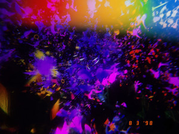

Music Library
My curated collection of playlists, albums, artists, and favorite tracks.
Navigate with the scroll wheel, enter folders with the center button, go back with MENU. Press the play button to stream in the floating Spotify player.
IPOD5:54 AM88%
Playlists
- 01 ♫ aarsh's Top Songs 2020-2025
- 02 ▸ Top Songs›
- 03 ▸ 2025›
- 04 ▸ 2026›
◀◀▶▶

aarsh's Top Songs 2020-2025
A collection of my most played tracks over the years.
500 songs 5h 29m Open in Spotify